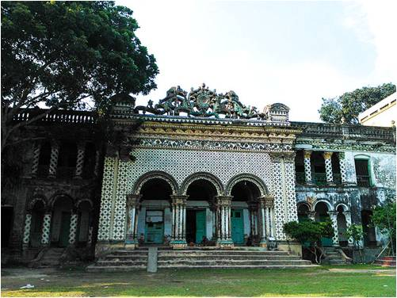

গোপালপুর উপজেলা সদর থেকে ১০ কি মিঃ দূরে হেমনগর ইউনিয়নে এটি অবস্থিত । যেখানে অষ্টাদশ শতাব্দীর কারুকাজ করা হেমবাবুর জমিদার বাড়ীর দ্বিতল ভবনটি আজও সেই পুরোনো ঐতিহ্য নিয়ে মাথা উচু করে সগর্বে দম্ভ প্রকাশ করছে। বাড়ীর সামনে রয়েছে বিরাট মাঠ।
মাঠ পেরিয়ে গেলেই দেখা যায় দ্বিতল বাড়ীর ছাদে দু’টি পরীর ভাস্কর্য রয়েছে। তাই লোকে একে পরীর দালানও বলে। একশ’ কক্ষ বিশিষ্ট এই বাড়ীটি প্রায় ত্রিশ একর জমির উপর তৈরি। সামনে দরবার ঘর, দু’পাশে সারি-সারি ঘর গুলো নিয়ে গড়ে উঠেছে চতুর্ভুজাকার জমিদার প্রাসাদ।
তিন ফুট প্রশস্ত দেয়ালে ঘেরা জমিদার বাড়ীর মাঠের সামনে এবং বাড়ীর পেছনে রয়েছে বেশ বড়ো বড়ো দু’টি পুকুর। শিক্ষা-সংস্কৃতি বিকাশে জমিদার পরিবারের ছিল ব্যাপক ভূমিকা। হেমনগরের জমিদার হেম চন্দ্র চৌধুরির পিতা কালিবাবু চৌধুরি ছিলেন ব্যবসায়ী।
তিনি সূর্যাস্ত আইনের আওতায় শিমুলিয়া পরগণার জমিদারি কিনে নেন। কালিবাবু চৌধুরির ছিল চার ছেলে ও চার মেয়ে। বড় ছেলে হেরেশ্বর চন্দ্র চৌধুরি জমিদারি দেখা-শোনার দায়িত্ব পান। তিনি তদানিন্তন ময়মনসিংহ জেলার মধুপুর উপজেলার অন্তর্গত আমবাড়িয়া ষ্টেটে জমিদার বাড়ী বানান এবং জমিদারি পরিচালনা করেন।
কিন্তু আমাড়িয়া থেকে যমুনার পূর্বপাড় এবং সেখান থেকে মধুপুর গড় পযর্ন্ত বিশাল এলাকার জমিদারি পরিচালনা অসম্ভব হয়ে পড়ে। তাই তিনি গোপালপুর উপজেলার সুবর্ণখালী নাম গ্রামে দ্বিতীয় বাড়ী নির্মাণ করে জমিদারী প্রাসাদ বানান।
নদী ভাঙ্গনে সুবর্ণখালি বিলীন হতে থাকলে তিনি শিমলা পাড়া গ্রামে ১৮৮০ সালের দিকে রাজপ্রাসাদ তৈরি করেন এবং নিজ নামে এলাকার নামকরণ করেন হেমনগর। স্থানীয় মহল জমিদার বাড়ীটিকে কলেজের জন্য উপযুক্ত স্থান হিসেবে নির্ধারণ করলে ১৯৭৯ সালে ‘হেমনগর খন্দকার আসাদুজ্জামান ডিগ্রী কলেজ’ নামে একটি কলেজ প্রতিষ্ঠা হয়।
ফলে বহু কালের পুরনো ইতিহাস নির্বিচারে ধ্বংসের হাত থেকে কিছুটা রক্ষা পেয়েছে। তবুও জমিদার বাড়ীর সৌন্দর্য আজ অতীত।